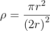
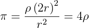

What are Monte Carlo Methods?¶
Overview¶
Monte Carlo Methods are a class of numerical methods which use repeated simulations to obtain a random sampling from an underlying unkown probablity distribution. Monte Carlo methods rely on repeated independant simulations using random numbers. This makes them very well suited to parallel and distributed solutions, because you can split the work of completing repeated independent calculations among multiple processing units. Monte Carlo methods are often employed when there is no closed form solution or deterministic solution algorithm to the underlying problem. As this sort of problem is quite common, Monte Carlo methods are used in a wide variety of fields–from computational chemistry to finance. Monte Carlo methods were first developed for general applications such as these by Nicholas Metropolis and Stanislaw Ulim in 1949. In 1987, Metropolis wrote an interesting recounting of the beginnings of the use of these methods.
An Interesting Classic Example¶
To make this concrete, let’s illustrate a classical mathematical problem that can be
solved with sampling of random numbers: estimating the value of  using
geometric properties of a circle and a square.
using
geometric properties of a circle and a square.
Imagine you have a circular target inside a larger square target. You want to find the probabibilty that if you throw a dart it will hit the inner target. To run a ‘Monte Carlo Simulation’ to solve this problem, you would simply throw a bunch of darts at the target and record the percentage that land in the inner target. More concretely, we simulate the throw of the dart by generating a pair of random numbers between 0 and the length of the side of the square, each one representing the x and y coordinate of the location of the dart. Then we determine if that simulated dart location falls within the circle or not.
We can extend this idea to approximate quite easily. Suppose the inner target
is a circle that is inscribed inside a sqare outer target. Since the sides of the
square are twice the radius of the circle, we have that the ratio,  of the area of the circle to the area of the sqaure is
of the area of the circle to the area of the sqaure is

We can rearrange this formula to solve for as follows:

If we can determine the ratio of the area of the circle to the total area of the square
enscribing it, we can approximate .
As it happens, we can empirically calculate a value for the ratio of the area of the circle
to the area of the square with a Monte Carlo simulation. We pick lots of random
points in the square and the ratio is the number of points inside the circle
divided by the total number of points. As we sample more and more points, the ratio of the
number of points that fall inside the circle to the total number of points tried is
equal to the ratio of the two areas. We multiply this by 4 and we have our estimate of .
We can simplify this slightly by using a  circle of radius 1, as shown in the following illustration.
circle of radius 1, as shown in the following illustration.

Estimating via random sampling of points. Attribution: By CaitlinJo [CC-BY-3.0 (http://creativecommons.org/licenses/by/3.0)], via Wikimedia Commons.
Simulating Card Games for Fun and Profit¶
The original motivating example that Monte Carlo methods draw their name from is gambling and game playing. In this module, we develop parallel algorithms that approximate the probabilities of various outcomes in card games and the roulette wheel.
About Randomness¶
How Computers Generate Random Numbers¶
Algorithms that implement Monte Carlo methods require a source of of randomness. If we are writing a serial algorithm, we can simply use the standard random number generator, for example, rand() in C. Computers (unless specifically fitted with a chip which gathers randomness from some other source) cannot produce true random numbers. Rather, the standard library random number generator takes some relatively random 32-bit or 64-bit integer input, called the seed, and transforms it sequentially to produce a stream of psuedo-random numbers. A random number generator is created with the seed as input to a function called srand(), and each time a new random number is requested using the rand() function, the integer pattern is changed to produce a new number. The sequence of numbers produced by such a pseudorandom number generation algorithm try to approximate a uniform distribution of numbers, each one statistically independent from the others.
Note
It is important to realize that a pseudorandom number generator function such as rand() creates the same sequence of numbers every time for a given input seed, which is typically a very large integer. In C and C++, we often use the function time() create the seed integer, because it returns the number of seconds since January 1, 1970. When running a sequential program multiple times, this seed would be different each time the program was run and the pattern of random numbers generated would be different.